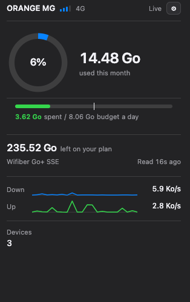

ck-connect-check
How much of your mobile data plan is left, always in the menu bar — read straight from a Huawei HiLink router and from your carrier.
Requires macOS 11 Big Sur or later, on Apple silicon or Intel, and a
Huawei HiLink router at 192.168.8.1. The Windows build
requires Windows 10 or later, 64-bit.

Opening it the first time
The app is unsigned — there is no Apple Developer account behind it — so macOS refuses to open it on first launch and says it cannot check it for malicious software. You only have to get past this once:
- Drag ck-connect-check from the disk image into Applications.
- In Applications, right-click (or Control-click) the app and choose Open, then Open again in the dialog.
- If macOS still blocks it, open System Settings → Privacy & Security, scroll down to the message about ck-connect-check, click Open Anyway and confirm.
After that it launches like any other app. It has no Dock icon and no window — look for it in the menu bar.
Installing it on Windows
The installer is unsigned too, so Microsoft Defender SmartScreen stops it the first time with “Windows protected your PC”. You only have to get past this once:
- Run ck-connect-check-windows-setup.exe.
- When SmartScreen appears, click More info, then Run anyway.
It installs for your user only, with no admin rights, and starts straight away — look for it in the notification area of the taskbar.